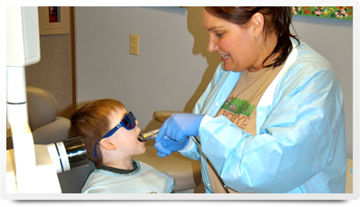

We support the recommendation by the American Academy of Pediatric Dentistry that your child should visit the dentist by his or her first birthday. At this appointment you will receive valuable information on how to keep your child's teeth healthy and cavity free.
How do I Prepare My Child?
Your child's first visit to the dentist is an important one and it is our goal to make every visit enjoyable and positive for your child. We understand that every parent has worries about how his or her child will behave at the dentist. Your help in preparing your child for their first appointment is important. We suggest staying positive, we want your child to develop a favorable opinion of the dentist. Please do not share with your child any anxiety you may have about dentists. Try to avoid using words that may cause unnecessary fear such as "hurt", "pain", "shot", "needle:, "drill" or "pull"; we use age appropriate and non-threatening words to explain our equipment and procedures. Ensure your child that the friendly doctor and staff will explain everything to him or her and answer all questions.
Will My Child Cooperate?
The first visit to the office can be a challenging and new experience for many children, especially if they have had a negative experience in another dental office. Parents should not be surprised or embarrassed if their child cries, this is a normal and age appropriate coping skill. With regular dental visits to a comfortable and trustworthy environment most children will develop into confident and happy dental patients. At Buckeye Pediatric Dentistry, our doctors and staff are specially trained and have years of experience in child development and behavior management. Our goal is to build lasting relationships with our patients from infancy through college and instill in them the skills and desire to have a lifetime of good oral health and habits!
What Will Be Done?
Please be aware that during the first appointment, treatment such as fillings or extractions will NOT be done. We use the first visit to get to know your child and gain his or her confidence in us, to assess your child’s dental needs, and to evaluate behavior to determine the best approach to take in any necessary treatments.
Office Policies
One parent is always welcome to accompany his or her child to the treatment room. For the safety and privacy of all patients, other children who are not being treated should remain in the reception room with a supervising adult.